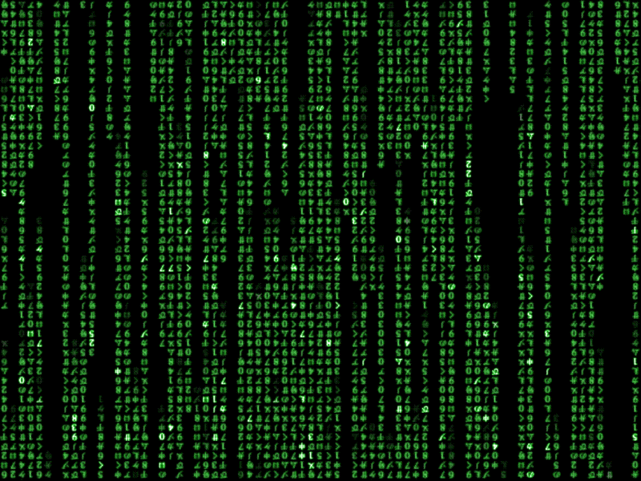

El arquitect@ de la web es aquella o aquel que diseña, crea, programa el entorno simulado (¿...?), un entorno que tambien controla y el cual puede destruir, hackear, subvertir, encriptar...El arquiecto tiene la habilidad necesaria para modificar y extender su lenguaje y como resultado desarrollarlo. La o el arquitect@ es amante del código abierto escrito en JavaScript, HTML (HyperText Markup Language -lenguaje de marcación-) y CSS (Cascading Style Sheets). El arquitecto crea lenguajes, simulaciones, utopías, distopías...

Para poder crear tu ENTORNO_SIMULADO tienes que indagar e investigar sobre la historia de la web y el dark_web (TorBrowser). Tienes que apropiarte de contenido y liberarlo de su atadura y así te acercarás y darás tus primeros_pasos HACIA_LO_SUBLIME_postDIGITAL ...

“In the Beginning, ARPA created the ARPANET.
And the ARPANET was without form and void.
And darkness was upon the deep.
And the spirit of ARPA moved upon the face of the network and ARPA said, 'Let there be a protocol,' and there was a protocol.
And ARPA saw that it was good.
And ARPA said, 'Let there be more protocols,' and it was so. And ARPA saw that it was good.
And ARPA said, 'Let there be more networks,' and it was so."
Danny Cohen.